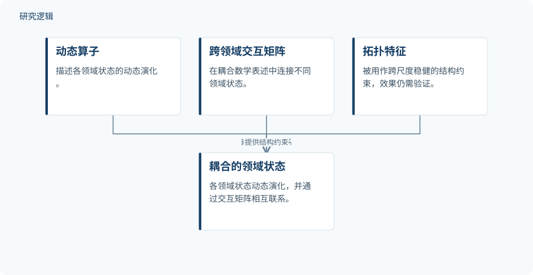

摘要解读
面向多尺度气候、能源、水文、城市、工业与健康系统的量子拓扑神经算子与数字孪生智能
Quantum Topological Neural Operators and Digital Twin Intelligence for Multiscale Climate, Energy, Hydrological, Urban, Industrial and Health Systems
解读更新 2026-11-10 17:15 · 依据公开摘要整理，未核验全文细节
气候、能源、水文、城市、工业与健康系统的数据越来越丰富，数字孪生却仍受领域模型和尺度差异限制。这项研究提出QTNODT统一框架，阅读价值在于理解其如何连接拓扑、神经算子与风险决策，而不是将其视为已经验证的跨领域预测工具。
文章目录
数据日益丰富，数字孪生为何仍然割裂
异构传感器、仿真与观测基础设施持续提供系统信息，但数据丰富并不自动意味着模型互通。摘要指出，领域专用模型、不兼容的尺度，以及对非线性拓扑结构表达不足，仍使不同系统的数字孪生处于割裂状态。
研究试图建立共同的分析语言，让跨领域预测、韧性评估和干预设计能够在统一框架下讨论。这里的目标是组织不同模型与决策环节之间的关系，而非摘要已经证明的应用收益。
用拓扑约束和动态算子连接领域状态
作者综合神经算子、量子机器智能、拓扑学习及多个领域数字孪生相关文献，提出“量子拓扑神经算子数字孪生智能”（QTNODT）。框架结合持久性与图拓扑表示、量子或量子启发式特征编码，以及学习函数空间之间解映射的神经算子，并纳入数据同化、不确定性量化和风险感知优化。
其耦合数学表述让各领域状态通过动态算子演化，再由跨领域交互矩阵建立联系；拓扑特征则被用作跨尺度稳健的结构约束。这是摘要明确提出的建模安排，不能据此认定其跨尺度稳健性已经获得实证验证。
依据摘要整理的领域状态耦合示意


仅概括摘要明确提出的动态演化、跨领域联系和拓扑约束，不表示已验证的执行流程，也不是论文原图。
下载 SVG图示关系说明
实线表示相邻阶段的信息流，虚线表示跨阶段联系或反馈。
动态算子 → 耦合的领域状态：描述状态演化；跨领域交互矩阵 → 耦合的领域状态：建立跨领域联系；拓扑特征 → 耦合的领域状态：提供结构约束
评分示例展示组合规则，而非真实系统性能
在归一化的0–10数值演示中，加权领域评分为8.141；施加示例性不确定性惩罚后，风险调整的QTNODT评分为7.813。该演示说明如何共同考虑准备程度、孪生保真度、拓扑稳定性、计算能力和治理因素。
这些分数不是预测准确率，也不构成真实系统中的效果证据。摘要将研究的主要价值定位为方法论贡献：为数据、拓扑、算子、孪生和决策之间规定可检验的接口，而非报告经过验证的性能优势。
从统一表述到实证有效，证据仍需补齐
仅凭摘要，无法判断真实样本规模、数据来源与划分、基准模型设置、比较结果或跨领域验证范围，也无法确认量子或量子启发式编码的具体实现及贡献。这些属于当前资料未报告的信息，不能据此断言论文没有开展相关工作。
摘要明确指出，实证验证仍需要真实领域数据集、基准比较和前瞻性评估。因此，统一框架与数值演示应同真实部署效果区分，不能把预期用途写成已经实现的预测、维护或风险改善。
阅读启发：关注预测维护接口如何被检验
阅读启发：对智能运维读者，值得进一步查阅预测维护数字孪生如何接入这一框架，以及孪生保真度与不确定性如何进入风险决策。另一个关键问题是，拓扑约束在何种数据和尺度条件下具有可检验的作用；当前摘要尚不足以回答，也不支持将拓扑表示直接等同于结构拓扑优化。
以上为本站阅读启发与建议，不是论文已验证的结论。